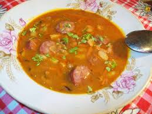

Суп с копченым мясом, пекинской капустой и томатами
Сытный, наваристый, густой суп. Как раз то, что необходимо в морозную погоду. Копчености можно использовать любые, по вкусу. Вместо пекинской капусты можно использовать белокочанную. Помидоры можно использовать как свежие, так и консервированные. Подавать со сметаной. Количество ингредиентов указано на четырехлитровую кастрюлю.
Ингридиенты:

500 г копченого мяса
500 г картофеля
300 г пекинской капусты
300 г помидоров
150 г моркови
150 г лука
растительное масло
соль
перец
Приготовление
Лук мелко нарезать.
Морковь натереть на средней терке.
Мясо нарезать небольшими кусочками.
Капусту нарезать.
Картофель нарезать кубиками или брусочками.
В кастрюле на растительном масле обжарить лук.
Добавить морковь, обжарить.
Добавить мясо, обжарить.
Добавить помидоры, тушить 2–3 минуты.
Налить воду, довести до кипения.
Добавить картофель.
Посолить, поперчить.
Варить до готовности картофеля.
Добавить капусту, варить в течение 3–5 минут (белокочанную капусту можно добавить вместе с картофелем).